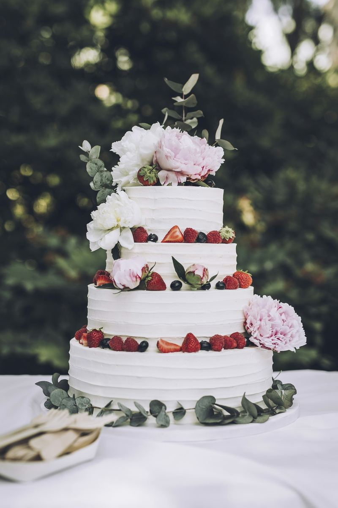
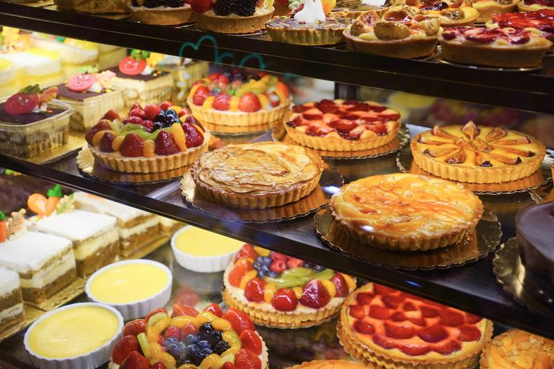
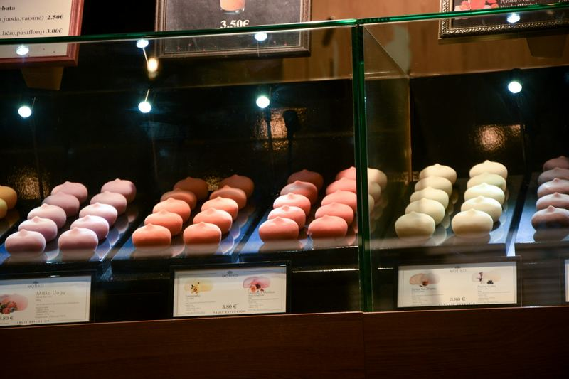
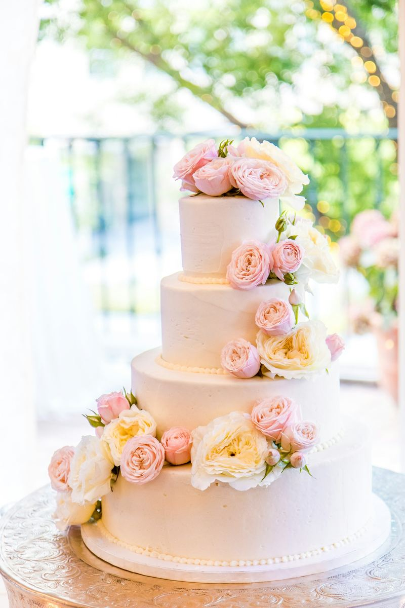
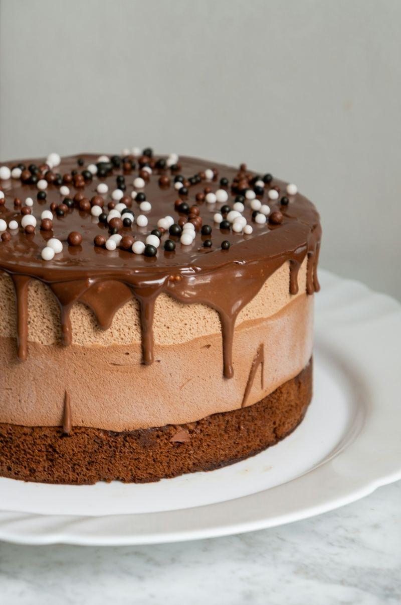

Jak velký dort potřebujete?
Posuňte, kolik vás bude, a uvidíte, jaký dort stačí. Velikost je orientační, přesně ji domluvíme při objednávce.
Co pro Vás upečeme
- Dorty na zakázkuNarozeninové, dětské i tvarové dorty z fondánu podle Vašeho přání.
- Svatební dorty a koláčeSvatební dort, koláčky, řezy a cukroví na svatební stůl.
- Zákusky a řezyKaždý den ve vitríně, k posezení i s sebou.
- Chlebíčky a panna cottaNa oslavy, porady a rodinná setkání.
- Vánoční cukrovíNa objednávku, včas před svátky.





5,0 ze 4 hodnocení
„Chtěla bych poděkovat za výborné koláče, vynikající řezy a luxusní cukroví. Všem svatebním hostům chutnalo.“
zákaznice na Firmy.cz
„Vše na jedničku, domluva, ochota, chlebíčky i panna cotty luxusní, všem moc chutnalo.“
zákaznice na Firmy.cz
„Mohu jen doporučit. Přístup skvělý a výrobky ještě lepší.“
zákaznice na Firmy.cz
- Adresa
- 17. listopadu 538/57, Bílovec
- Otevřeno
- po–pá 8–16
- Cukrárna Veronika